MXP Demo | Instalación
¿Qué es la MillennialXP?
Una 'Máquina del Tiempo' que aporta una experiencia Plug & Play para revivir la era dorada del gaming y el arte audiovisual del cruce de milenios (90s~2012).
Esta versión conceptual es totalmente funcional, pero dista del proyecto a futuro. Propone un vistazo a la experiencia que queremos entregar - jugar a títulos clásicos expandidos por la comunidad en un entorno retro/renovado y optimizado.
1. Sistema Operativo
Usamos un Windows 11 23H2 personalizado hasta la coronilla con un estilo que recuerda a XP - iconos, ventanas, menús, sonidos, etc.
Tiene las actualizaciones desactivadas y montones de características eliminadas o modificadas; no hay Store, ni Drive, ni Copilot ni nada que sobre respecto a la experiencia retro que queremos generar.
No tiene antivirus - confiamos en la seguridad por aislamiento.
(más sobre este tema en el punto 3)
2A. Colección de Juegos
En el Escritorio hay 2 íconos: Playnite (juegos de PC) y Retrobat (Emuladores)
Contienen colecciones curadas de juegos de la época (hasta 2012), y el fuerte está en los de PC, preconfigurados para sistemas modernos y unos cuantos con mods, mapas de la comunidad y/o packs HD, así como traducciones al español cuando el juego original no las tenía.
Los juegos presentes en esta versión no son los que estarán en la v2.0, en la que procuraremos solo software liberado, abandonware, ports de la comunidad, emulación, y un sistema de acceso a compras en tiendas como GOG para luego expandirlos con la instalación automática de addons.
2B. Colección de Programas
Además de los juegos, la MXP incluye una serie de programas clásicos y modernos para reproducción multimedia, navegadores y downloaders web, descargas de drivers, mantenimiento del sistema y más.
3. ¡ALERTA DE VIRUS!
Efectivamente esta versión conceptual está envirosada - no de una forma que sea disfuncional (funciona perfectamente) pero sí con alertas de seguridad brindadas por VirusTotal en muchos de sus ejecutables.
Pueden ser falsos positivos? Algunos pueden ser...pero no le confiaría mi información
personal a esta versión, ni me arriesgaría a infectar otras PCs.
USALA SOLO PARA
JUGAR y probar el sistema.
PRECAUCIONES
- No la instales en una PC con otros discos conectados
- No enchufes un pendrive
- No navegues con tus cuentas personales (creá otras)
- No la conectes a una red privada (usá una red aislada con otro router o desconectá las demás PCs mientras usás Internet - o como mínimo que estén todas conectadas a una Red Pública)
Siguiendo esas 4 reglas, podés usar la MXP para jugar sin riesgo de contagio. En la v2.0 todo esto estará solucionado y será un sistema 100% seguro y confiable.
Por el momento, la MXP es una demostración técnica y conceptual, donde el foco está en la experiencia de usuario, la interfaz del sistema operativo y la expansión/curación de los juegos por parte de la fanática y fantástica comunidad gamer/developer.
¿Como la instalo?
La MXP se distribuye como un solo archivo listo para clonar en un disco vacio o a borrar (preferentemente un SSD) usando el software gratuito Macrium Reflect. Luego se conecta este disco a la PC donde se quiere usar la MXP y se arranca desde el mismo.
OJO: Esto puede ser rebuscado si no sabés nada de informática. No digo que no se pueda, claro que sí, más aún con la ayuda de IA y YouTube...pero te advierto que no es toser y ya está, puede ser desafiante...y el resultado sin duda sumamente gratificante ;)
REQUERIMIENTOS MÍNIMOS
- CPU de 4 Nucleos (un i5 de 2da gen ya va bien, o un Ryzen 3)
- 8GB de RAM (si es en Dual Channel mucho mejor)
- Disco Sólido (SSD, con un HDD vas a sufrir) de al menos 240GB
- GPU Dedicada de 2GB GDDR5 (yo uso una RX550)
- GPU Integrada moderna (Intel HD 620, AMD Vega 8)
- Software: Macrium Reflect (para clonar el disco)
o
Cómo acabo de explicar, esta versión está "envirosada", así que es importante que sigas las precauciones para evitar contagios (no inicies la MXP con otros discos conectados).
1. Descargar la MXP
Es un archivo (imagen de disco) para Macrium Reflect.
Elegí uno solo, dependiendo del tamaño de tu disco.
Para discos de 240GB (menos juegos):
💾 Descargar MXP Demo | Lite (138GB)Para discos de 500GB:
💾 Descargar MXP Demo | Full (324GB)2. Descargar Macrium Reflect
Mientras descarga la imagen de disco, bajate el soft
que usamos para clonarla.
(fuente: MajorGeeks)
Al instalar, destildá el checkbox de "Registro".
3. Clonar
El disco de destino debe estar conectado a la PC, ya sea al mother o con un adaptador USB.
TODA LA DATA DEL DISCO DE DESTINO SERÁ BORRADA.
Abrir Macrium Reflect, ir a "Restaurar" y luego a "Explorar..."
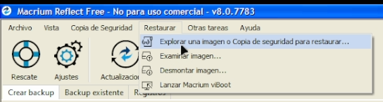Abrir el archivo .mrimg descargado.
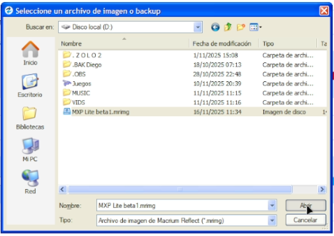Seleccionar el archivo y apretar el botón "Restauración".
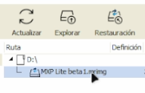Seleccionar el disco de destino. OJO CON ESTE PASO, chequear bien que sea el disco correcto para evitar borrar otro.
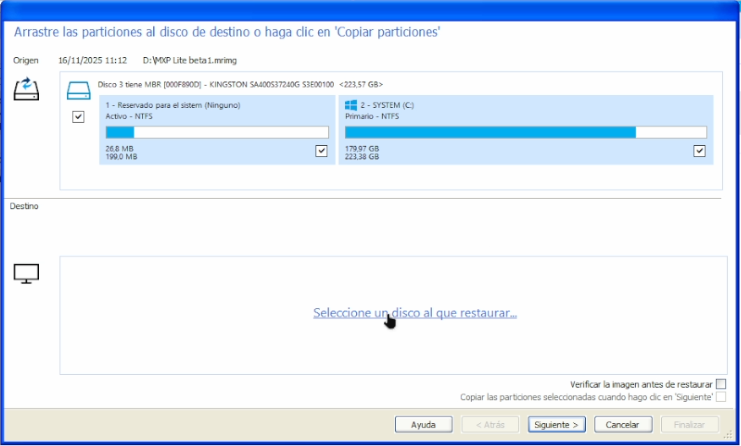OPCIONAL: Chequeá la casilla "Verificar la imágen..." por seguridad. Dale a "Siguiente".
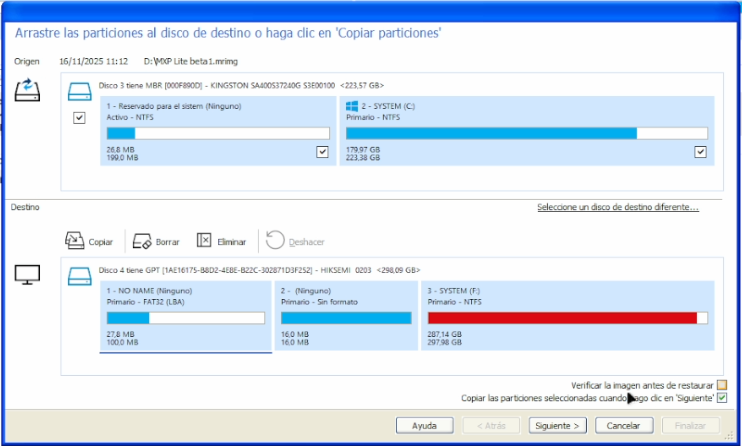Esperá que termine el proceso.
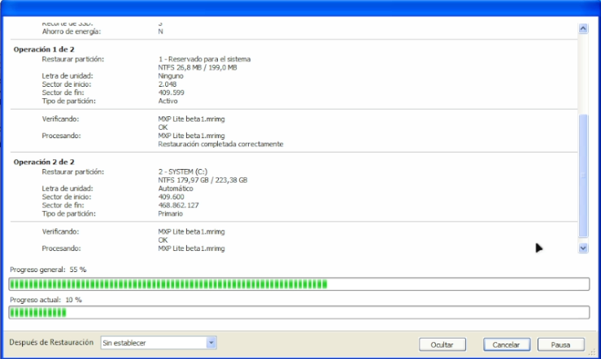Al terminar va a salir un cartel de finalización. El disco estará tendrá el sistema MillennialXP listo para enchufar en una PC y bootear desde el mismo.
4. Bootear
El disco clonado lo enchufamos en el motherboard de la PC donde queremos usar la MXP. Acá uso un HDD pero es mucho mejor un SSD.
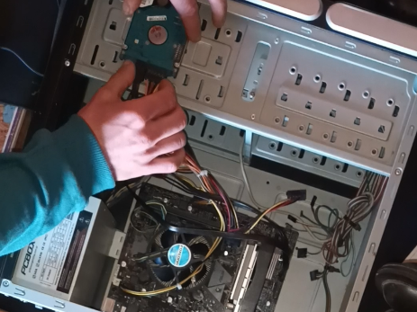Encendemos la PC y si tenemos suerte arranca el sistema; SI NO, entramos a la BIOS (normalmente apretando DEL, F2, F12 o ESC).
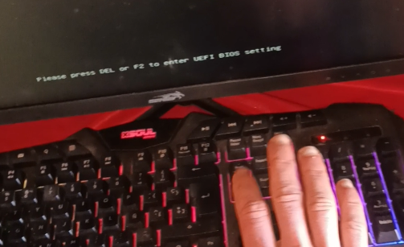La config va a depender del
modelo de tu motherboard.
Google/Gemini/ChatGPT te van a orientar en cómo hacer que
bootee.
Una vez que veamos estas pantallas, podemos festejar 🥳
5. Drivers
Sin ellos los juegos no van a correr.
Podés buscarlos en sus webs oficiales (googleando "tu_hardware driver win11") o usar el acceso directo a 3 programas claves que uso
para instalar controladores:
o podés buscar en la web los
drivers específicos de tu hardware
 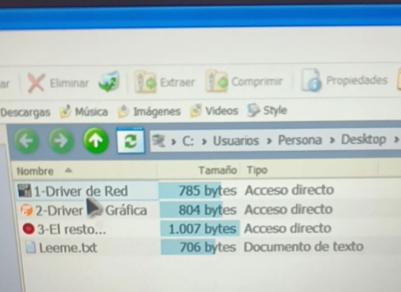
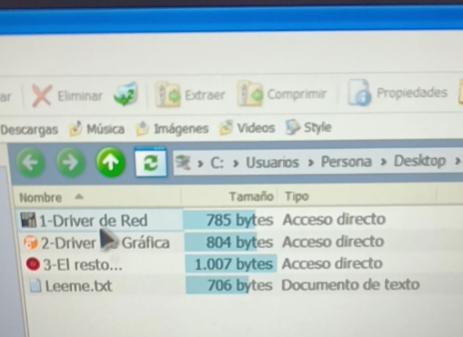
Están en orden de prioridad. El de red puede que se instale solo.
Para los dos primeros hay que tocar en el número de versión del driver...
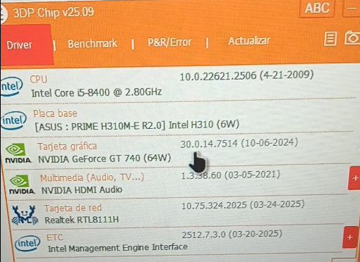...que nos abre la web donde descargarlo.
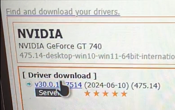Para terminar de actualizar todos los drivers usamos el 3ro (DriverBooster). Tarda un toque en cargar. Una vez abierto analizá...
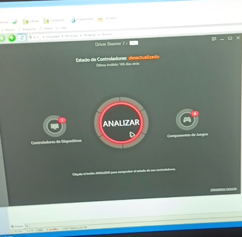...y mandale actualizar:
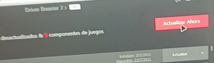Esperá que termine y reiniciá la PC.
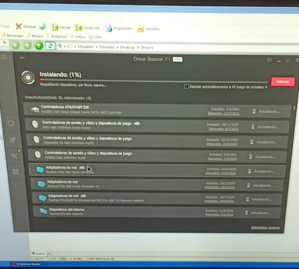6. ¡JUGAR!
Ahora seee después de toda esta odisea ya estás listx para revivir la experiencia millennial como corresponde ;)
Tenés las colecciones de PC y Consolas en los iconos más al sur de tu escritorio. La "LAN Virtual" (RadminVPN) sirve para jugar via internet con tus compas (tuts de cómo usarlo está lleno).
¡QUE LO DISFRUTEN!
Recordá seguir las precauciones de seguridad para evitar contagios...
o
corré el riesgo, pero dps no digas que no te avisé :P